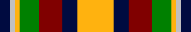

| ID | Name | Description | Duration (days) |
|---|
| 1 | CQ_STOVL_DAY | Completed three takeoffs and landings to the deck during the day in accordance with NAVAIR 00-80T-111. | 90 |
| 2 | CQ_STOVL_NIGHT | Completed three takeoffs and landings to the deck during the night in accordance with NAVAIR 00-80T-111. | 90 |
| 3 | CQ_CV_DAY | Completed three takeoffs and landings to the deck during the day in accordance with NATOPS. | 90 |
| 4 | CQ_CV_NIGHT | Completed three takeoffs and landings to the deck during the night in accordance with NATOPS. | 90 |
| 5 | WINGS_1_801NAS | 1.1 Pass introduction check-ride
1.2 Basic aircraft handling familiarity
1.3 Remain in formation during cross-country sorties while managing own aircraft
1.4 Operate the aircraft from land in day VMC conditions | 365 |
| 6 | WINGS_2_801NAS | 2.1 Operate the aircraft safely to and from the deck using CASE 1 procedures in the day
2.2 Fly safely as a second aircraft in arrow formation | 365 |
| 7 | WINGS_3_801NAS | 3.1 Operate the aircraft safely to and from the deck using CASE 1 procedures at night
3.2 Operate the aircraft safely to the deck using CASE 3 procedures during the day
3.3 Fly in tactical formation on a pre-briefed route during the day
3.4 Unguided AG weaponeering | 365 |
| 8 | WINGS_4_801NAS | 4.1 Deliver ordinance on pre-briefed and FAC directed targets at an assigned time
4.2 Guided AG weaponeering
4.3 Offensive and devensive BFM
4.4 Basic flight planning | 365 |
| 9 | WINGS_5_801NAS | 5.1 Plan, brief, and debrief complex missions
5.2 Operate the aircraft safely to the deck using CASE 3 procedures during at night
5.3 Lead a flight of two aircraft on operations | 365 |
| 10 | AAR_DAY_S3 | Demonstrated proficiency in Daytime AAR on the S-3 tanker | 90 |
| 11 | AAR_NIGHT_S3 | Demonstrated proficiency in nighttime AAR on the S-3 tanker | 90 |
| 12 | AAR_DAY_KC135 | Demonstrated proficiency in daytime AAR on the KC135 or KC135(MPRS) tanker | 90 |
| 13 | AAR_NIGHT_KC135 | Demonstrated proficiency in nighttime AAR on the KC135 or KC135(MPRS) tanker | 90 |
| 14 | AAR_DAY_KC130 | Demonstrated proficiency in daytime AAR on the KC130 tanker | 90 |
| 15 | AAR_NIGHT_KC130 | Demonstrated proficiency in nighttime AAR on the KC130 tanker | 90 |
| ID | Name | Description | Ribbon |
|---|
| 4 | OP_TALON_1 | Completed more than half of the missions in support of Operation TALON 1. |  |
| 5 | 50_HOURS | Flown 50 hours in total across all types. |  |
| 6 | 100_HOURS | Flown 100 hours in total across all types. |  |
| 7 | 250_HOURS | Flown 250 hours in total across all types. |  |
| 8 | 500_HOURS | Flown 500 hours in total across all types. | |
| 9 | 50_TYPE_HOURS | Flown 50 hours in one aircraft type. |  |
| 10 | 100_TYPE_HOURS | Flown 100 hours in one aircraft type. |  |
| 11 | 250_TYPE_HOURS | Flown 250 hours in one aircraft type. |  |
| 13 | 500_TYPE_HOURS | Flown 500 hours in one aircraft type. | |
| 14 | CONTROLLER | Has consistently provided air traffic control services to JSW pilots. |  |
| 15 | OP_PULLMAN | Completed more than half of the missions in support of Operation PULLMAN. |  |
| 16 | HARRIER_TYPE_CONVERSION | Completed the necessary training to operate the Harrier aircraft safely. |  |
| 17 | TOMCAT_TYPE_CONVERSION | Completed the necessary training to operate the Tomcat aircraft safely. |  |
| 18 | VIPER_TYPE_CONVERSION | Completed the necessary training to operate the Viper aircraft safely. | |
| 19 | APACHE_TYPE_CONVERSION | Completed the necessary training to operate the Apache aircraft safely. | |
| 20 | EAGLE_TYPE_CONVERSION | Completed the necessary training to operate the Eagle aircraft safely. | |
| 21 | FIGHTER_ACE | A pilot who has achieved five or more confirmed air kills on operations. | |
| 22 | OP_THRESHER_1 | Completed more than half of the missions in support of Operation THRESHER 1. |  |
| 23 | OP_SHADER_1 | Completed more than half of the missions in support of Operation SHADER 1. |  |
| 24 | OP_PURPLE_WARRIOR_1 | Completed more than half of the missions in support of Operation PURPLE WARRIOR 1. | |
| 25 | LOGISTICS_ENABLER | Provided significant assistance and support in the logistics field to enable JSW's primary missions. |  |
| 26 | MISSION_MAKER | Provided significant support and assistance to the mission making team in the execution of JSW's campaigns. |  |
| 27 | DIPLOMAT | Represented JSW's best interests in developing relationships with third parties. |  |
| 28 | AVIATION_AMBASSADOR | Brings real-world aviation experience to the JSW community to improve the experience for all members. |  |
| 29 | QUALIFIED_FLIGHT_INSTRUCTOR | Has provided significant training to JSW members on basic flight instruction. |  |
| 30 | QUALIFIED_WARFARE_INSTRUCTOR | Has provided significant training to JSW members on weapon employment and war fighting techniques. |  |
| 31 | FINANCIAL_CONTRIBUTOR | Has provided financial support to the running of the JSW group. | |
| 32 | MEDIA_PERSONALITY | Has used their social media presence to promote JSW activities. | |
| 33 | AGRESSOR | Has completed one operational tour as an aggressor pilot. |  |
| 34 | SAR_PILOT | Has rescued other JSW pilots on operational sorties. |  |
| 35 | TALK_TO_ME_GOOSE | Has completed at least one operation primarily in the second seat of an aircraft type. | |
| 36 | ENGINEERS_FRIEND | Has completed one operational tour without loss of an aircraft. | |
| 37 | SANDY_QUALIFIED | Provided AFAC or JTAC services in support of troops in contact on operations. | |
| 38 | PLUGGED_IN_DAY | First AAR refuel connection on first attempt during the day. |  |
| 39 | PLUGGED_IN_NIGHT | First AAR refuel connection on first attempt during at night. |  |
| 40 | GREY_HEART | Brought an aircraft home that has been badly damaged due to enemy action. |  |
| 41 | DOUBLE_ENDER | Has qualified on all seats of a particular aircraft type. | |
| 42 | COMPLETED_OCU | Has finished the complete OCU syllabus. |  |
| 43 | DABBING_UNICORN | Received a dabbing unicorn (4.0) from Wings. |  |
| 44 | ACTUAL_UNICORN | Received an actual unicorn (5.0) from Wings. |  |
| 45 | WAR_HAWK | Has completed every mission in an operational tour. |  |
| 46 | COMBAT_READY | Has completed the necessary training to be deemed fully combat ready. |  |